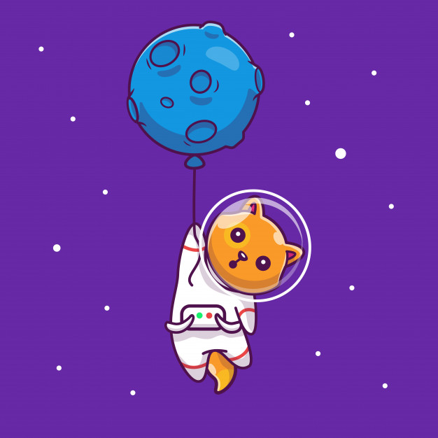
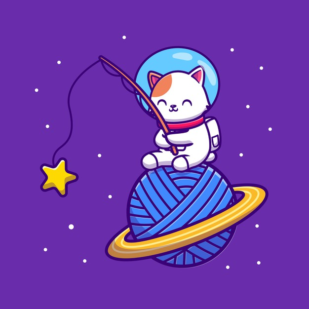
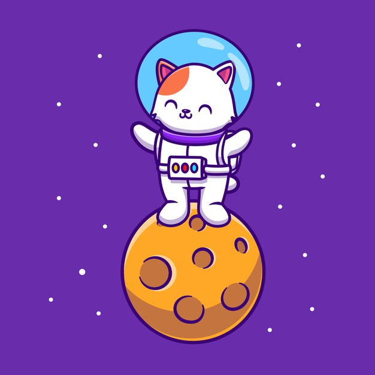

Raças de Gatinhos
Aqui você pode encontra todas as raças de gatos que existem no universo, todos a um clique de distancia luz, VEM DAR UMA EXPLORAMIAAAU!

A brincadeira não pode parar
Caso você tenha um gatinho galatico em casa, aqui estão alguns guias de como cuidar, alimentar e BRINCAR MUITOO com o seu miu galatico !

Estou com fome quero viajar
Como todo gatinho galatico, todos gostam de passear bastante pelo universo, nesse artigo contem os melhores pontos turisticos para seu miau galatico, que inclui passagem pelo Fominhaaauuu .

Exploração absolumiauuu
Venha conhecer a historia dos primeiros gatos galaxiosos que pisaram na lua e os principais gatos exploradores. Dizem que eles vivem mais de 100 anos !